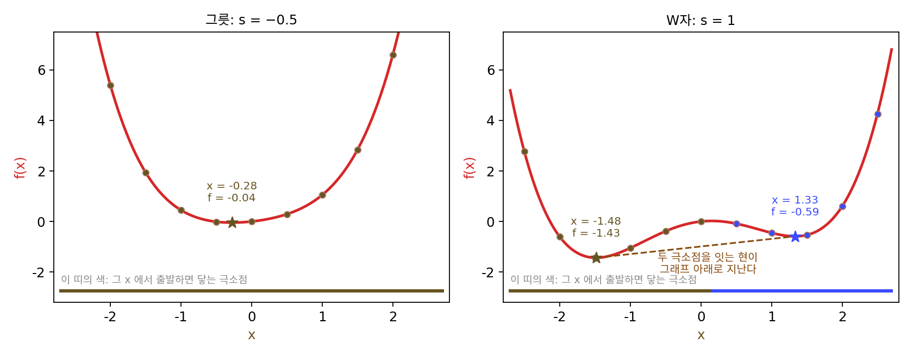
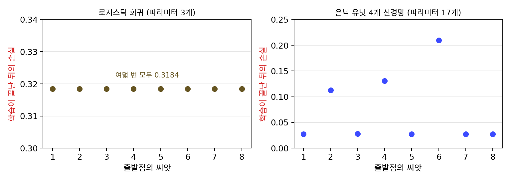

볼록이면 왜 쉬운가: 극소가 곧 최소
이 장의 물음
로지스틱 회귀를 학습시킬 때 무작위 씨앗을 바꿔 가며 여러 번 돌려 본 적이 있다면, 학습이 끝난 뒤의 손실과 가중치가 소수점 아래까지 똑같이 나온다는 것을 보았을 것이다. 출발점이 달라도 도착지는 같다. 그런데 은닉층이 하나뿐인 작은 신경망으로 같은 실험을 하면 이야기가 달라진다. 씨앗만 바꿨는데 어떤 때는 손실이 거의 0까지 내려가고, 어떤 때는 그 몇 배에서 멈춰 더 내려가지 않는다. 학습 규칙도 학습률도 같은데 왜 로지스틱 회귀는 출발점을 잊고 신경망은 출발점이 도착지를 정할까?
그래디언트의 립시츠 상수(두 점 사이 거리 1당 그래디언트가 바뀌는 크기의 상한) 이야기에서 본 것처럼, 그 상한에 맞춰 스텝을 고르면 손실은 스텝마다 줄어든다. 그러나 「줄어든다」는 약속은 어디에 멈출지, 그곳이 가장 낮은 곳인지, 몇 스텝 만에 닿는지까지는 말해 주지 않는다. 게다가 실제 문제의 파라미터(학습으로 고치는 숫자들)에는 제약이 붙는 일이 많다. 확률들은 더해서 1이어야 하고, 가중치 벡터의 길이에 상한을 두기도 한다.
이 장은 다음 물음에 차례로 답한다.
- 어디서 출발해도 같은 최소점에 닿는 손실과, 출발점이 도착지를 정하는 손실은 모양이 어떻게 다를까?
- 어디서 출발해도 같은 최소점에 닿는다면, 거기까지 몇 스텝이 걸린다고 장담할 수 있을까?
- 파라미터에 제약이 있어도 같은 이야기가 통할까? 제약의 모양은 무엇을 바꿀까?
- 제약에 닿아 멈춘 최소점에서는 그래디언트가 0이 아니다. 그 점이 최소점인지는 무엇으로 알아볼까?
볼록 함수: 극소가 곧 최소
경사하강은 지금 서 있는 자리의 그래디언트만 보고 걷는다. 그래디언트가 0이 되는 곳에 이르면 더 갈 방향이 없어 멈춘다. 그런데 그래디언트가 0인 곳은 둘레의 어느 점보다도 낮은 곳일 뿐, 함수 전체에서 가장 낮은 곳이라는 보장은 없다. 둘레보다 낮은 점을 극소점, 함수 전체에서 가장 낮은 점을 최소점이라 부르고, 두 점에서의 함숫값을 각각 극솟값, 최솟값이라 부른다. 산골짜기 마을에서 보면 동네에서 가장 낮은 개울가가 극소이고, 나라 전체에서 가장 낮은 바닷가가 최소다. 발밑만 보는 경사하강은 개울가와 바닷가를 가려내지 못한다. 그렇다면 어떤 함수에서는 그래디언트가 0인 곳에 멈추기만 하면 그곳이 가장 낮은 곳이라고 안심해도 될까?
역사: 선형이냐 아니냐에서 볼록이냐 아니냐로
덴마크의 요한 젠센(Johan Jensen)이 1906년에 쓴 논문은 볼록 함수를 다룬 이른 시기의 고전으로 꼽힌다. 젠센은 대학에 자리를 얻은 적이 없고, 1881년부터 코펜하겐 전화 회사에서 일하며 1890년부터는 기술 부서를 이끈 기술자였다. 1906년 학술지 『악타 마테마티카』에 실은 「볼록 함수와 평균값 사이의 부등식에 대하여(Sur les fonctions convexes et les inégalités entre les valeurs moyennes)」에서 그는 산술평균과 기하평균 사이의 부등식처럼 따로따로 증명되던 여러 고전적인 부등식이 볼록 함수에 대한 부등식 하나에서 모두 나온다는 것을 보였다. 지금 젠센 부등식이라 부르는 것이다.
최적화 쪽에서 볼록성이 왜 그렇게 중요한지를 가장 짧게 적은 사람은 미국의 수학자 랠프 타이럴 록펠러(R. Tyrrell Rockafellar)다. 최적화 문제는 오랫동안 함수가 일차식인지 아닌지에 따라 「선형 계획」과 「비선형 계획」으로 나뉘어 불렸다. 록펠러는 1993년 『SIAM 리뷰』에 실은 개관 논문 「라그랑주 승수와 최적성」에서 이렇게 썼다. 「최적화의 큰 분수령은 선형과 비선형 사이가 아니라 볼록과 비볼록 사이에 있다.」 그가 바로 앞 문장에 든 까닭은 두 가지였다. 볼록 함수를 볼록 집합 위에서 최소화할 때는 둘레에서 가장 낮은 해가 모두 전체에서 가장 낮은 해이고, 최적점이 되려면 꼭 필요한 1차 조건(그래디언트에 대한 조건)이 그것만으로 충분해진다는 것이다. 둘째 까닭은 제약에 닿은 최소점을 알아보는 조건을 다룰 때 다시 만난다. 이 절은 첫째 까닭을 숫자로 확인하는 데서 시작한다.
그릇과 W자: 같은 규칙, 다른 도착지
극소점이 둘인 가장 간단한 다항함수는 4차 함수다. 2차 함수는 극소점이 하나뿐이고, 3차 함수는 한쪽 끝이 한없이 내려가 최소점이 없다. 그래서 4차 함수 한 집안을 골랐다.
휨 s를 −0.5로 두면 둥근 그릇이고, 1로 두면 가운데가 솟은 W자다. 두 함수를 학습률 η = 0.05로, 서로 다른 출발점에서 2000스텝씩 내려가 보자.
| 출발점 x₀ | 그릇(s = −0.5)의 도착점 | 도착점의 f | W자(s = 1)의 도착점 | 도착점의 f |
|---|---|---|---|---|
| −2.5 | −0.2784 | −0.0433 | −1.4840 | −1.4350 |
| −1.0 | −0.2784 | −0.0433 | −1.4840 | −1.4350 |
| 0.0 | −0.2784 | −0.0433 | −1.4840 | −1.4350 |
| 0.5 | −0.2784 | −0.0433 | 1.3322 | −0.5877 |
| 1.0 | −0.2784 | −0.0433 | 1.3322 | −0.5877 |
| 2.5 | −0.2784 | −0.0433 | 1.3322 | −0.5877 |
그릇에서는 어디서 출발하든 같은 점 −0.2784에 닿는다. W자에서는 0과 0.5 사이 어딘가를 경계로 도착지가 갈린다. 그 경계는 가운데 봉우리 꼭대기 x = 0.1517이다. 봉우리 왼쪽에서 출발하면 왼쪽 골짜기 −1.4840(손실 −1.4350)에, 오른쪽에서 출발하면 오른쪽 골짜기 1.3322(손실 −0.5877)에 닿는다. 두 골짜기 모두 그래디언트가 0이므로 경사하강은 오른쪽 골짜기에 멈춘 채 0.85나 더 낮은 곳이 왼쪽에 있다는 것을 알 길이 없다. 학습률을 0.01이나 0.2로 바꿔도 0.5에서 출발하면 여전히 1.3322에 닿는다. 도착지를 정한 것은 학습률이 아니라 출발점과 함수의 모양이다.
그렇다면 두 함수의 모양은 무엇이 다를까? W자의 두 극소점을 직선으로 이어 보자. 이렇게 그래프 위의 두 점을 잇는 선분을 현이라 한다. 두 극소점 −1.4840과 1.3322의 한가운데 x = −0.0759에서 현의 높이는 두 손실의 평균 −1.0113인데, 그래프는 −0.0285에 있다. 현이 그래프보다 1 가까이 아래로 지나간다. 같은 두 점을 그릇에서 이으면 한가운데에서 현의 높이는 1.9714이고 그래프는 −0.0199에 있어, 현이 그래프 위로 지나간다. 그릇에서는 어느 두 점을 골라도 현이 그래프 아래로 내려가지 않는다.

이렇게 그래프 위의 어느 두 점을 이은 현도 그래프 아래로 내려가지 않는 함수를 볼록 함수 (현이 그래프 위에 놓이는 함수 / convex function)라 한다. 두 점 x, x′ 사이를 비율 t로 나눈 점에서 다음이 성립한다는 뜻이다.
볼록 함수에서는 극소점이 곧 최소점이다. 이 사실은 그림을 보고 짐작하는 데서 그치지 않고 위 부등식 하나로 증명할 수 있다. 어떤 볼록 함수에 극소점 x̂가 있는데, 그보다 낮은 점 x′이 어딘가에 있다고 해 보자. x̂에서 x′으로 현을 그으면, 현은 높이 f(x̂)에서 출발해 그보다 낮은 f(x′)으로 내려간다. 그러니 현 위의 점은 x̂에서 아무리 조금만 떨어져도 f(x̂)보다 낮다. 볼록 함수의 그래프는 현 아래에 있으므로, x̂ 바로 옆에 f(x̂)보다 낮은 점이 있게 되고, x̂가 둘레에서 가장 낮다는 가정과 어긋난다. 그러니 볼록 함수에는 극소점보다 낮은 점이 없다. 이 증명이 쓴 것은 현에 대한 부등식 하나와 「현을 그을 수 있다」는 것뿐이다. 미분할 수 있는지도, 극소점이 하나인지도 쓰지 않았다.
두 번 미분할 수 있는 함수라면 볼록인지 가리기가 더 쉽다. 곡률 f″(2차 미분, 그래프가 얼마나 휘었는지)가 어디서나 0 이상이면 볼록이다. 이 집안에서는 f″(x) = 3x² − 2s이고, 가장 작은 값은 x = 0에서의 −2s다. 그래서 s ≤ 0이면 볼록이고, s가 0을 넘는 순간 가운데에 곡률이 음수인 구간이 생긴다. W자(s = 1)의 봉우리 꼭대기에서 곡률은 −1.931이다.
ML에서: 로지스틱 회귀는 볼록하고, 신경망은 그렇지 않다
로지스틱 회귀의 손실은 가중치에 대해 볼록 함수다. 샘플 하나의 손실 log(1 + e⁻ᶻ)(z는 정답 클래스에 매긴 점수)는 z에 대해 볼록이고, z는 가중치의 일차식이며, 볼록 함수를 일차식에 합성해 더한 것은 다시 볼록이기 때문이다. 서포트 벡터 머신(SVM)의 손실도 같은 까닭으로 볼록이다. 실험으로 확인해 보자. 두 덩어리가 서로 겹친 2차원 점 200개(씨앗 0)에 가중치 둘과 편향 하나짜리 로지스틱 회귀를 맞추고, 무작위 출발점 여덟 개(씨앗 1~8)에서 경사하강을 5000스텝씩 돌리면, 처음 손실은 0.42에서 9.50까지 제각각이지만 끝 손실은 여덟 번 모두 0.318406이고 가중치도 (1.3512, 1.1536), 편향 0.0796으로 같다. 끝점에서 잰 헤시안(2차 편미분을 모은 행렬)의 고윳값은 0.0813, 0.0978, 0.1121로 모두 양수다. 어느 방향으로 보아도 그릇이라는 뜻이다.
같은 실험을 은닉 유닛 네 개짜리 신경망(파라미터 17개)으로 해 보자. 두 좌표의 부호가 같으면 1, 다르면 0인 정답(직선 하나로는 가를 수 없는 XOR 꼴)을 점 200개에 붙이고 출발점 여덟 개에서 20000스텝씩 학습시키면, 다섯 번은 손실 0.0275 근처에 닿지만 나머지 세 번은 0.1126, 0.1308, 0.2101 근처에 머문다. 학습 규칙과 학습률은 같고 출발점만 다르다. 신경망의 손실이 왜 볼록할 수 없는지는 아래 문제 3에서 직접 확인한다.

문제 1. 안개 낀 산책로
산책로를 따라 말뚝 열한 개(0번~10번)가 서 있고, 말뚝 자리의 높이는 차례로 62, 55, 58, 49, 53, 60, 51, 44, 47, 56, 64 m다. 안개가 짙어 바로 양옆 말뚝의 높이만 알 수 있다. 「양옆 가운데 더 낮은 말뚝으로 옮기고, 양옆이 모두 지금보다 높으면 멈춘다」는 규칙으로 걷는다. (가) 0번, 4번, 9번 말뚝에서 출발하면 각각 어디서 멈추는가? (나) 가장 낮은 말뚝(7번)에 닿는 출발점은 몇 개인가? (다) 높이가 70, 61, 54, 49, 46, 45, 46, 49, 54, 61, 70 m인 산책로라면 어떻게 되는가?

규칙대로면 계속 내려가니까 결국 제일 낮은 7번에 닿겠죠. 0번에서 출발하면 1번이 55로 더 낮으니까 1번으로… 어, 1번 양옆이 62와 58이라 둘 다 높아요. 1번에서 멈춰요.

4번과 9번에서도 해 보세요.

4번은 양옆이 49와 60이니까 3번으로 가고, 3번 양옆이 58과 53이라 멈춰요. 9번은 8번, 7번으로 내려가서 7번에서 멈추고요. 높이 55, 49, 44에서 세 번 다 다르게 멈췄어요.

(나)는 하나씩 해 보면 5번부터 10번까지 여섯 개야. 0~1번은 1번에서, 2~4번은 3번에서 멈춰. 5번은 4번(53)보다 6번(51)이 더 낮아서 7번 쪽 골짜기로 넘어가.

양옆보다 낮은 말뚝, 그러니까 멈출 수 있는 말뚝은 몇 개죠? (다)의 산책로에서는요?

원래 산책로에는 1번, 3번, 7번 세 개고, (다)에는 5번 하나뿐이에요. (다)는 이웃한 말뚝 사이의 높이 차가 −9, −7, −5, −3, −1, 1, 3, 5, 7, 9로 점점 커져요. 내려가는 폭은 줄고 올라가는 폭은 커지기만 하니까 중간에 다시 올라갔다 내려가는 데가 없어요. 원래 산책로는 높이 차가 −7, 3, −9, …로 오르내려서 골짜기가 셋이 됐고요. 높이 차가 점점 커진다는 건 곡률이 0 이상이라는 말을 말뚝으로 옮긴 거네요.

조별 과제 자료를 찾을 때 첫 번째로 나온 블로그 글만 보고 「이게 제일 좋은 자료」라고 멈췄다가, 발표 날 다른 조가 훨씬 좋은 논문을 들고 온 적이 있어요. 주변에서 제일 나은 것과 전체에서 제일 나은 것이 달랐던 거죠.
문제 2. 최소점이 여럿인 볼록 함수, 극소점이 하나인 비볼록 함수
(가) f(x) = max(|x| − 1, 0)은 볼록 함수인가? 최소점은 어디이고, 경사하강(학습률 0.05)은 −2.5, 0, 2.5에서 출발하면 어디에 닿는가? (나) f(x) = (x² − 1)²의 극소점은 ±1이고 두 곳의 값이 모두 0이라 극소가 모두 최소다. 이 함수는 볼록인가? (다) 위젯 1의 집안에서 휨 s = 0.3인 함수는 볼록인가? 출발점마다 어디에 닿는가? (라) 「극소가 모두 최소」라는 성질은 볼록 함수와 같은 말인가? (풀어 본 뒤 위젯 1의 「문제 2 (다) 불러오기」로 확인해 보자.)
(가)는 꺾인 데가 있어서 미분이 안 되잖아요. 볼록은 곡률로 따지는 거니까 볼록이 아닐 것 같아요.
정의로 돌아가 볼까요? 볼록은 곡률로 정의했나요, 현으로 정의했나요?
현으로요. 두 점을 이어 보면… 이 함수는 −1과 1 사이가 높이 0으로 평평하고 밖은 기울기 1인 직선이에요. 어느 두 점을 이어도 현이 그래프 아래로 안 가요. 볼록이네요. 경사하강은 −2.5에서 −0.95, 2.5에서 0.95, 0에서는 그래디언트가 0이라 출발점 0에 그대로 멈춰요. 셋이 다 다른 데서 멈췄는데요?
그래도 세 곳 모두 높이가 0이야. −1부터 1까지 전부가 최소점이야. 볼록 함수에서 극소가 최소라는 건 멈춘 곳의 높이가 같다는 말이지, 최소점이 하나라는 말은 아니었어. 그런데 최소점을 모아 놓은 구간 [−1, 1]은 그 자체로 끊긴 데가 없네.
(나)는요? 극소가 모두 최소면 볼록이라고 해도 될까요?

−1과 1을 이은 현은 높이 0인데, 가운데 0에서 그래프는 1이에요. 현이 그래프 아래로 지나요. 볼록이 아닌데도 극소가 모두 최소예요. (다)도 그래요. s = 0.3이면 f″ = 3x² − 0.6이 |x| < 0.4472에서 음수라 볼록이 아닌데, 그래디언트가 0인 점이 −0.9559 하나뿐이라 열한 출발점이 모두 거기 닿아요.

그래요. 그럼 (라)의 답은요?

같은 말이 아니에요. 볼록이면 극소가 곧 최소지만, 거꾸로는 성립하지 않아요. 볼록은 「극소가 최소」를 보장하는 넉넉한 조건이고, 「극소가 최소」인 함수가 모두 볼록인 건 아니에요. 해석학에서 「미분 가능하면 연속이지만 연속이라고 미분 가능하지는 않다」를 반례로 확인하던 것과 같은 모양이네요.

볼록인지 확인할 수 있으면 안심이고, 볼록이 아니라고 해서 꼭 망하는 건 아니군요. 그러면 볼록이 아닌 함수는 하나하나 따져 봐야 하는 거고요.
문제 3. 은닉 유닛 두 개를 맞바꾸면
위 실험에서 손실 0.0275에 닿은 신경망(은닉 유닛 네 개, 파라미터 17개)이 있다. 이 파라미터를 θ라 하자. (가) 은닉 유닛 1과 2의 입력 가중치·편향·출력 가중치를 통째로 맞바꾼 파라미터 θ′의 손실은 얼마인가? (나) 두 파라미터를 반씩 섞은 가운데 점 (θ + θ′)/2의 손실은 0.0275보다 클 수 있는가? 실제로 계산해 보면? (다) 이 신경망의 손실은 볼록 함수인가?
(가)는 파라미터 숫자가 꽤 많이 바뀌니까 손실도 달라지겠죠. 두 파라미터 사이 거리를 재 보니 47.9나 돼요.
맞바꾼 신경망에 같은 입력을 넣으면 출력은 어떻게 되죠?

아… 은닉 유닛 1이 하던 계산을 이제 유닛 2가 하고, 유닛 2가 하던 걸 유닛 1이 해요. 출력층은 둘을 더하기만 하니까 순서가 바뀌어도 결과는 같아요. 손실도 똑같이 0.0275예요.
그럼 (나)를 볼까. 볼록 함수라면 가운데 점의 손실은 두 끝 손실의 평균 0.0275를 넘을 수 없어. 그런데 계산하면 2.5806이야. 섞은 비율 0.25와 0.75에서도 1.1468이고.
가운데 점에서 은닉 유닛 1과 2의 입력 가중치는 어떻게 생겼나요?
둘 다 (−1.474, 0.046)으로 똑같아요. 반씩 섞으니까 두 유닛이 같은 계산을 하는 유닛이 돼 버렸어요. 은닉 유닛이 사실상 세 개뿐인 신경망이니 XOR를 제대로 못 맞추는 거고요. 현의 높이는 0.0275인데 그래프가 2.5806이니까, 이 손실은 볼록이 아니에요.
이 논리는 이 신경망 하나에만 통하는 이야기일까요?
아니에요. 은닉 유닛이 둘 이상이고 그 유닛들이 서로 다른 일을 하는 좋은 해가 하나라도 있으면, 이름만 바꾼 똑같이 좋은 해가 또 있어요. 원래 해와 이름만 바꾼 해의 가운데 점에서는 유닛들이 같아져서 손실이 올라가요. 그러니 쓸 만한 신경망의 손실은 거의 언제나 볼록이 아니에요. 대수학에서 방정식에 대칭이 있으면 해가 여러 개 묶음으로 나오던 것과 같네요. 여기서는 은닉 유닛 맞바꾸기가 그 대칭이고요.
아까 문제 1의 산책로처럼 골짜기가 여러 개인데, 신경망은 그중 상당수가 이름만 바꾼 같은 골짜기인 거네요. 조원 넷이 맡은 파트를 서로 바꿔도 보고서는 똑같은데, 두 분담표를 반씩 섞으면 두 사람이 같은 파트를 쓰고 한 파트는 비는 것처럼요.